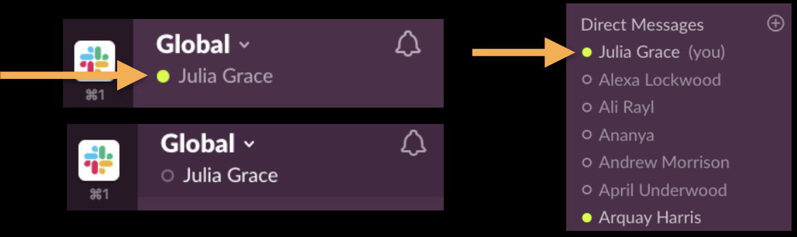
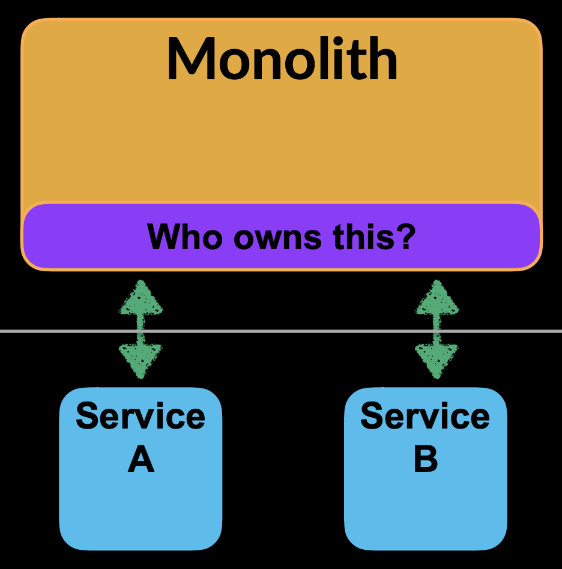
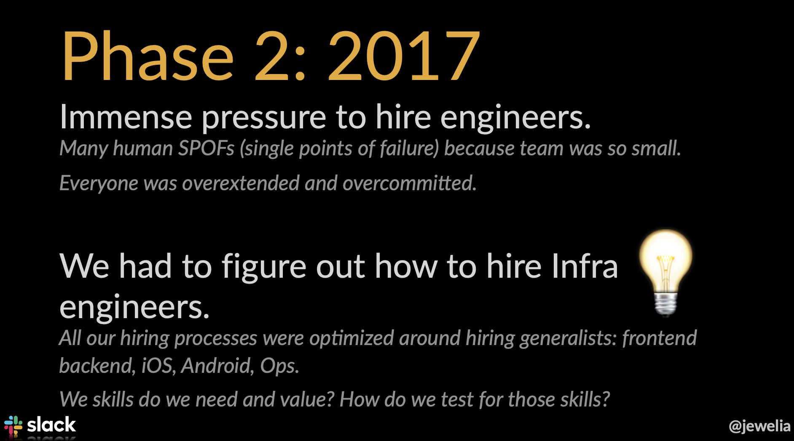
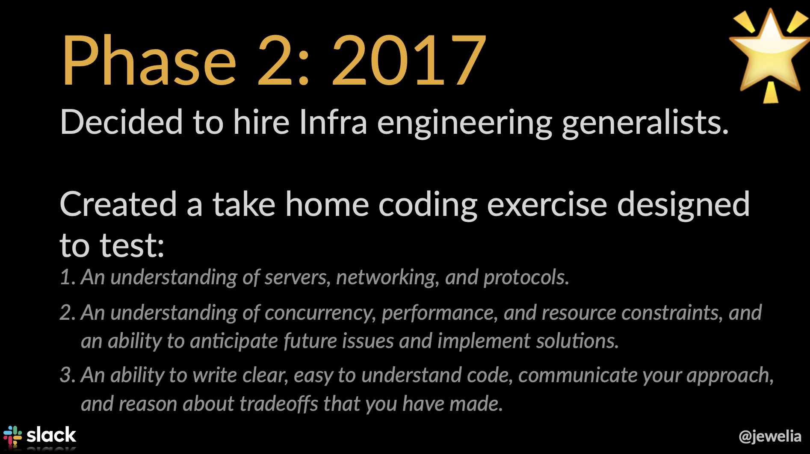
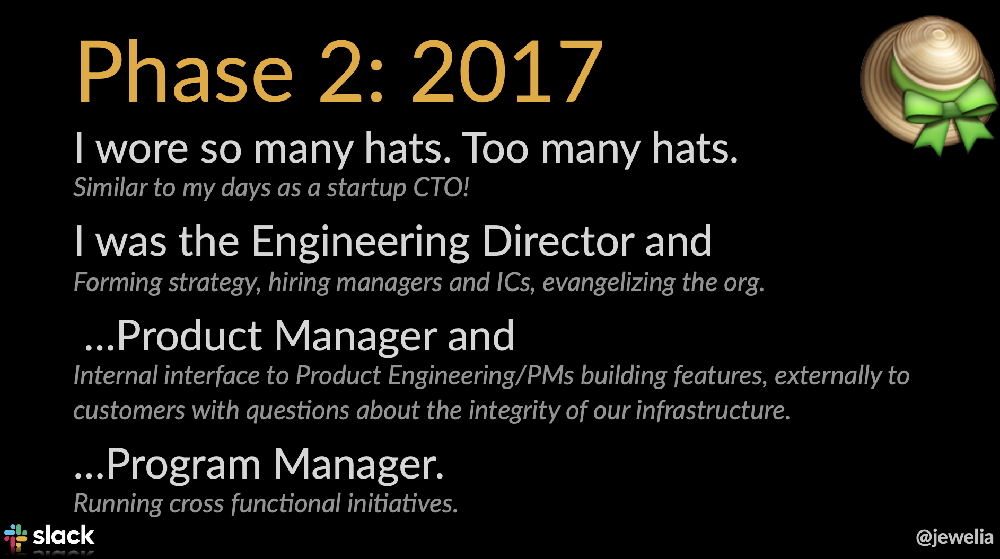
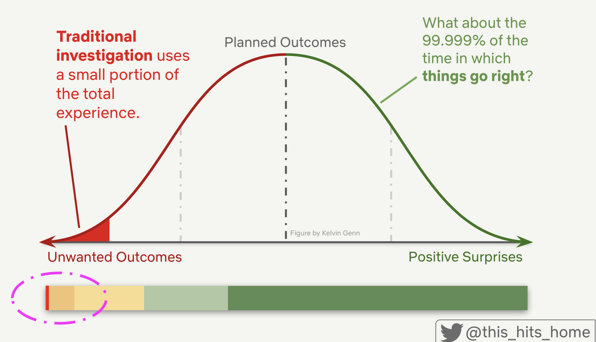
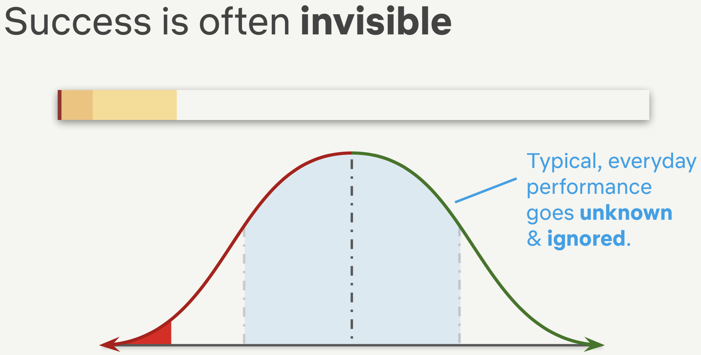

How did Slack scale its Infra Engineering Team?
Year 2016
4 million active users
~ 150 Engineers focused building on features
Problem #1
Presence = 80% of websocket traffic
Solution: Broadcast -> publish/subscribe
Problem #2
Product-led coy to Engineering-led coy
Solution: Find evangelist and executive sponsor
Year 2017
Hack/PHP monolith on backend - Vanilla JS on frontend
1 service: presence and real-time messaging
A new Go caching service was being built
Problem #1
A communication risk appeared
The more technically complex, nuanced a problem is… The higher the communication risk.
The Pressure
Hiring
Multiple Hats

How did things go right? (Netflix)
Recovery > Prevention
The most important thing we can learn is to build capacity to encounter failure succesfully
3 Pillars of Fallacy
| Comprehension | Understandability | Predictability |
|---|---|---|
| Incidents cannot be fully comprehended. | Managing the small stuff does not prevent big incidents. | Learning from the last incident will not allow you to predict the next one. |
| They are fraught with uncertainty. | Incidents are not made up of causes. We do not find them; we construct them. | Complex systems are not deterministic. |
| Remediation items will contribute to further incidents. | Their state cannot be precisely or repeatedly foretold. |
Bell Curve of Daily Ops
Usually missed observations
9 Factors
- Contributors & Enablers
- Mitigators
- Risks
- Difficulties in Handling
- Follow-up Items
- Artifacts
- Timeline
- References
- Open Questions
What was the trigger?
What was the underlying problem?
What was done?
Who responded to it?
What was done?
Who responded to it?
"Islands of Knowledge?"
"I didn't know it worked like this?"
What should we do to recover?
A report of the incident and steps taken to fix it?
Note down each action taken at each timestamp
A better understanding of the change brought to the service
What did we refer to to fix the issue?
Active discussions within the team for the decisions made
Justify and ask why were the actions taken?
Final Takeaways
Recovery > Prevention.
There is no root cause.
Stop reporting on the nines.
Learn how things go right.
Read more "surprises" at continuous.wtf
fades in, then out when we move to the next step
fades in, then obfuscate when we move to the next step
blue only once